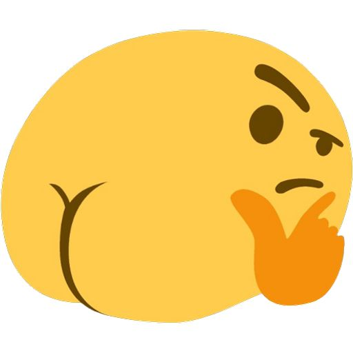

Avaliação clínica
Conversa e exame para entender sua queixa, sua rotina e seu histórico de saúde.
Dermatologia e medicina estética
Avaliação individual, indicação responsável e acompanhamento com a Dra. Fizzame Sá, do primeiro atendimento ao retorno.

O procedimento
Reúne técnicas médicas que buscam melhorar o contorno, a firmeza e a qualidade da pele da região, conforme a indicação de cada paciente. As técnicas, os materiais e o número de sessões são definidos após a avaliação, e todo procedimento tem indicações, limitações e possíveis riscos, explicados na consulta.
Conversa e exame para entender sua queixa, sua rotina e seu histórico de saúde.
Cada plano considera suas características e o que faz sentido para o seu caso.
As técnicas só são indicadas depois da avaliação, com explicação clara das opções.
Instruções objetivas para o preparo e para os cuidados após o procedimento.
Reavaliação para acompanhar a evolução e esclarecer dúvidas.
Indicações, limitações e possíveis riscos explicados antes da decisão.
Uma nova perspectiva
Pequenos detalhes podem mudar a forma como percebemos uma imagem. Mova o controle para os lados e explore a comparação.
Arraste para comparar
Demonstração interativa com imagens ilustrativas. Não representa pacientes nem resultados de procedimentos.

Antes DepoisAgendamento
Conte um pouco sobre o que você procura. A equipe retorna para combinar o melhor horário.
Dúvidas frequentes
É uma avaliação individual: a Dra. conversa com você, entende seus objetivos e seu histórico e explica se existe indicação e quais são as opções.
Não. A indicação depende de uma avaliação médica. Em alguns casos, o procedimento não é recomendado ou precisa ser adiado.
Não. Resultados variam de pessoa para pessoa e nenhum procedimento tem resultado garantido. Na consulta, você recebe orientação sobre o que é possível esperar, as limitações e os riscos.
Depende da avaliação e da técnica indicada. O planejamento é definido de forma individual.
Os cuidados e o tempo de recuperação variam conforme a técnica. A orientação é passada de forma personalizada na consulta.